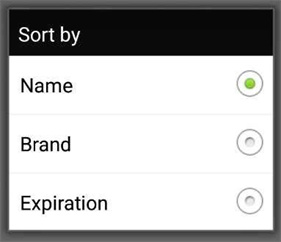

绿盒子 beautybox 到底值不值得花时间？一笔账给你算清楚
beautybox 绿盒子有积分和注册码体系，但文档没给出明确定价。本文从功能边界和时间成本入手，给轻度、主力、重度三类用户算算账，看要不要为它投入。
开头先抛问题
绿盒子 beautybox 我断断续续用了小半年了。坦白说，我一开始没打算认真算这笔账——毕竟安装包只有 4.5MB，装一下又不花钱。但用着用着，发现它里头有积分、有注册码，还有不少功能边界上的模糊地带。问题来了：它到底值不值得你花时间折腾？要不要为它掏钱？
这篇就把我这阵子摸清楚的功能边界、时间成本、替代路线全部摊开来，你照着自己的使用强度对号入座就行。
功能拆解：它能给你什么，不能给你什么
先说核心。绿盒子的官网把它定义成一个影视聚合播放器，电影、剧集、短剧、综艺都能在里头找着。v5.1.x 几个版本的核心功能完全一致：分区浏览、标签筛选、热门榜单、搜索、收藏、续播、缓存，这些是基础盘。

设置页里有两块跟"要不要付费"直接相关的东西：缓存管理和历史记录清理。缓存可以手动指定大小，默认应该有个上限——高清画质的视频缓存起来很快就能把手机存储啃得差不多，重度用户大概率要调大或者频繁清理。历史清理是隐私保护的最后一道防线，清历史和清缓存、清收藏是三个独立操作，互不干扰。
积分和注册码体系是另一条线。我翻过beautybox文档，里头只提了"注册码状态、积分"这几个字，没有给出具体规则——积分怎么赚、注册码怎么拿、有没有付费解锁项，这些在公开收录页里都没写清楚。但有一点是确定的：这些东西不会影响核心观影功能，免费也能用。
筛选和榜单：帮你省时间的地方
绿盒子各分区的顶部都有一排横向滚动的筛选标签，地区、类型、年份、排序四个维度任意组合。榜单是每天更新的，短剧分区甚至能到小时级更新，片荒的时候翻一翻比自己瞎搜效率高多了。
我个人最常用的一个技巧：年初的时候翻一下"年份=去年"的电影榜单，经常能挖到不少还没来得及引起注意的好片——这些片不会出现在当年的热门榜里，但质量往往不差。

分三类人算时间账
文档没给出明确的付费版和免费版的功能差异，那这笔账就按时间成本来算——省的时间值不值。
轻度用户：每天看不超过 30 分钟
你只是在等车、吃饭间隙刷一集短剧或者点开一段综艺花絮。缓存用系统默认大小就够了，历史记录不需要清，榜单随便翻翻就行。这种情况下，绿盒子免费版的功能完全够用，甚至你可能连设置页都不需要打开。结论：不用花一分钱，也不用花太多时间折腾。
唯一可能遇到的小麻烦：文件没下载完整导致解析失败。解决办法很简单——从官方下载重新拿一份，删掉残包，用 Wi-Fi 重下，装之前核对一下文件大小是不是 4.5MB 左右。这个问题跟付费不付费没关系，纯网络环境的事。
主力用户：每天看 1~2 小时
你会追一部正在更新的剧，会收藏想看还没看的片子，会用筛选标签找特定类型的片。这时候时间成本开始显现：
- 缓存管理：每天两小时高清画质，一周下来缓存能占好几个 G。如果你手机存储本身比较紧张，调缓存大小、定期清理这件事就得花时间。
- 历史清理：如果你有隐私顾虑（比如有人会翻你手机），看完特定内容之后要记着去设置页点一下清理按钮，这不难但容易忘。
- 找片效率：筛选标签和榜单能帮你省掉在多个视频 App 之间跳来跳去的时间——这是绿盒子相比单独平台最大的效率优势。
主力用户的时间账大概是这样：假设你原来每天花 10 分钟在三个 App 之间切换找片，绿盒子帮你省到 3 分钟，一天省 7 分钟，一个月就是 210 分钟 = 3.5 小时。这 3.5 小时值不值你为绿盒子投入一些注意力？我觉得值。 但至于要不要为它掏钱，文档没说清楚有什么付费特权能让你再省更多时间，所以——暂时不用付，除非你发现了积分或注册码能解锁的、确实能再提效的功能。
重度用户：每天看 3 小时以上
你可能同时追 3~5 部剧，会翻年份榜单挖老片，会用搜索框输入模糊关键词找特定内容，缓存经常满到需要手动清理。对你来说，绿盒子的核心价值是一站式聚合 + 高效筛选——不需要在 A 平台看一半、跳到 B 平台看续更、再翻 C 平台找花絮。
但重度用户的痛点也最明显：缓存管理、历史清理、找片深度。如果有什么付费能解锁的功能能帮你把这些痛点抹平（比如自动清理策略、高级筛选、专属榜单），那这笔钱花得很可能比你在单独平台买会员划算得多。问题是——文档没写绿盒子有这种付费解锁项。 所以现状就是：免费够用，但没的花钱。
替代方案：不付这笔钱（其实也没的付）有什么别的路
既然文档没给绿盒子明确定价，替代方案其实就是"不用绿盒子，用什么"的问题：
多个单独视频 App 组合：爱优腾三家 + B 站 + 一个短剧 App，每个装一下。好处是内容更全、更新更快、有独家剧；坏处是 App 装得多、切来切去烦、每家可能都要单独会员。轻度用户用这个组合没问题，主力和重度用户大概率会累。
其他聚合类 App：市面上类似的聚合工具不少，但稳定性参差不齐——有的突然就挂了，有的广告特别多，有的筛选功能做的很粗糙。绿盒子的版本迭代（v5.1.3 → v5.1.4 → v5.1.5）说明它还在维护，这点比那些一发布就停更的替代品靠谱得多。
浏览器网页端：直接在手机浏览器里打开各种视频网站。好处是不用装 App、存储占用为零；坏处是体验差、广告多、播放不稳定，某些网站会拦截移动端访问。偶尔应急还行，长期用不现实。
结论：三类用户各归各位
我给的结论很直接：
- 轻度用户：闭眼免费用，啥都不用折腾。4.5MB 的安装包装了就放着，想起来才点开看看。
- 主力用户：继续免费用，但值得花 10 分钟把设置页摸一遍——调个合适的缓存大小、记住历史清理的位置，这两项设置完能省不少后续麻烦。至于付费？等它真的有值得付的功能再说。
- 重度用户：免费够用，但如果你在绿盒子里发现了积分或注册码体系能解锁的高级功能（文档没写清楚，可能藏在应用内部），而且确实能帮你省更多时间——那钱花得划算。否则继续免费用，把省下的钱留给真正需要会员的单独平台。
最后补一句：如果有一天你想深入研究绿盒子的使用细节、排查问题，它的文档站整理了不少实用内容，包解析失败、缓存清理、筛选榜单这些都有专门的说明页。我自己遇到解析失败的时候也是照着它的排查步骤走的——删残包、核对大小、检查存储，三步解决，比自己瞎试省时间。
这套资料在三个仓库都能拿到，GitHub、Gitee、GitCode各有一份，国内访问走 Gitee 或 GitCode 更顺一些。